A friendly, complete guide to every feature — no chemistry-software experience needed.
WaweKit is a desktop application for working with collections of molecules. You load a file of structures, and WaweKit helps you clean them, measure them, compare them, group them, view them in 3D, and report on them — the everyday toolkit of early drug discovery and cheminformatics research.
Everything runs on your computer: no account, no upload, no internet needed. Long operations run in the background, so the app never freezes — watch the progress bar in the bottom-right corner.
File → Open Molecules…
(Ctrl+O) or simply drag a file onto the window.
Try one of the demo files in the samples/ folder, e.g.
demo_similarity.smi.Ctrl+D. New columns appear:
MW, LogP, TPSA and more.MW < 300 in the filter box above the
table and press Enter. Only light molecules remain. Clear the box to see
everything again.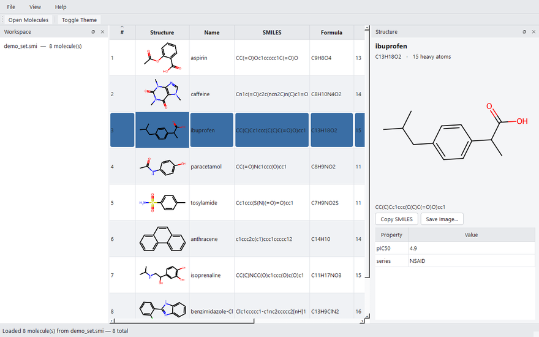
Ctrl+T any time to cycle to the next one (section 11).What you can open:
| Format | Extensions | Typically contains |
|---|---|---|
| SDF | .sdf | Many molecules + data fields (the industry workhorse) |
| MOL | .mol | A single molecule |
| SMILES | .smi, .smiles, .txt | One molecule per line: SMILES name |
How: File → Open Molecules…, or drag one or more files
anywhere onto the window. Files are loaded one at a time with progress; loading
more files adds to the table (it does not replace what's there).
If some records are broken (corrupt entries, unreadable SMILES), the good ones still load — a summary dialog lists exactly which entries failed and why. One bad molecule never aborts a load.
Converting formats: WaweKit features a built-in file format converter.
Go to File → Convert Format… (Ctrl+Shift+V) to convert between
CSV, SDF, MOL, and SMILES formats without loading them into the main workspace.
Select the input file, choose the target output format, specify the output location, and click Convert.
A conversion report lists total records processed, successes, and syntax warnings (such as truncating a multi-molecule dataset to a single-molecule MOL format).
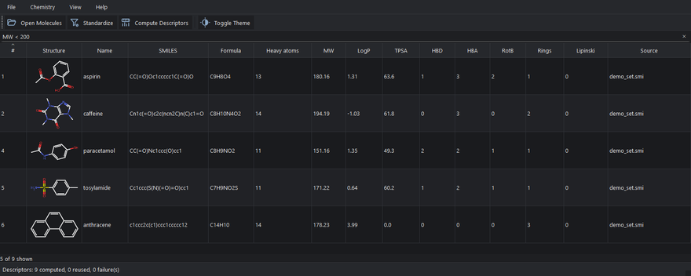
The box above the table understands two kinds of input:
| You type | You get |
|---|---|
amine | Rows whose name or SMILES contains "amine" |
MW < 500 | Molecules lighter than 500 (needs descriptors computed) |
LogP >= 2 | LogP of at least 2 |
Lipinski = 0 | No Rule-of-5 violations at all |
Sim >= 0.7 | Similarity score ≥ 0.7 (after a similarity search) |
Numeric tokens: MW, LogP, TPSA, HBD, HBA, RotB, Rings, Lipinski,
Sim. Operators: < <= > >= = !=. Clear the box to
remove the filter. Rows without the value yet are hidden by numeric filters —
compute descriptors first.
In addition to the quick-filter box, WaweKit provides an interactive Property Filters panel (tabbed with Workspace and Scaffolds on the left side of the window).
Once you compute descriptors (Ctrl+D), this panel automatically discovers the minimum and maximum ranges of the active dataset and constructs range inputs for each property.
Adjust the min/max values to filter the table rows in real-time. Clearing the dataset or recalculating descriptors automatically updates the filter ranges.
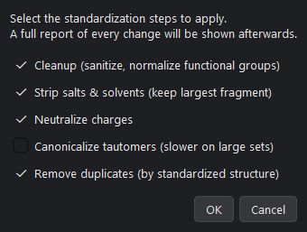
What it does: real-world files are messy — salts
(·HCl), charged forms, duplicate entries, inconsistent tautomers.
Standardization cleans every structure the same way so later numbers are
comparable.
When to use it: right after loading, before computing anything else.
How:
Chemistry → Standardize… (Ctrl+Shift+S).Good to know: standardizing replaces the dataset, so earlier computed values (descriptors, fingerprints, maps) are cleared — recompute them on the cleaned structures. That is deliberate: numbers computed on dirty structures should not survive next to clean ones.
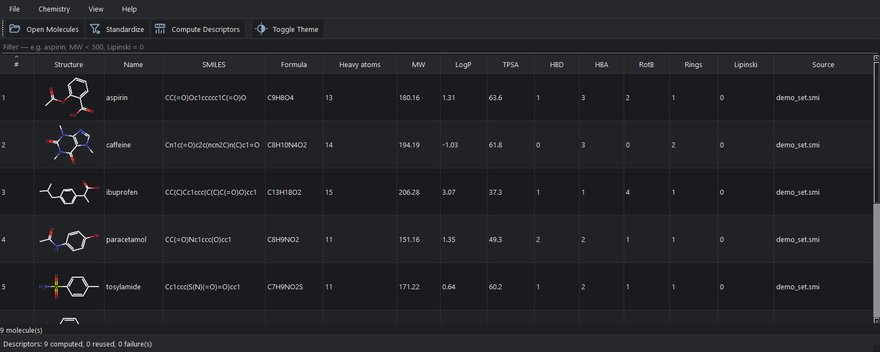
What it does: computes the classic property panel for every molecule:
| Column | Meaning | Rule-of-thumb |
|---|---|---|
| MW | Molecular weight (g/mol) | ≤ 500 (Lipinski) |
| LogP | Fat- vs water-loving (lipophilicity) | ≤ 5 (Lipinski) |
| TPSA | Polar surface area (Ų) | ≤ 140 favours oral absorption |
| HBD / HBA | H-bond donors / acceptors | ≤ 5 / ≤ 10 (Lipinski) |
| RotB | Rotatable bonds (flexibility) | lower = more rigid |
| Rings | Ring count | — |
| Lipinski | How many of the 4 limits are broken (0–4) | ≤ 1 = "passes" |
How: Chemistry → Compute Descriptors
(Ctrl+D). Sort any column by clicking its header; hover a header
for an explanation; filter with the quick-filter box (section 5).
WaweKit automatically audits loaded structures for common biological assay interference and toxicity alerts (using standard PAINS, Brenk, and NIH catalogs).
Molecules triggering structural alerts display a warning badge (e.g. ⚠️ 1) in the Alerts column.
Hovering over the cell displays a detailed list of the triggered warnings.
Additionally, selecting a molecule with alerts displays details of the warnings in the Structure panel next to the molecular formula.
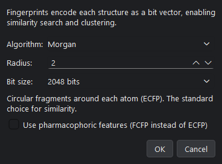
What it does: encodes each structure as a "bar-code" of bits so molecules can be compared quickly. Similarity search, chemical space, and clustering all build on fingerprints.
Which kind?
How: Chemistry → Compute Fingerprints…
(Ctrl+Shift+F), pick the kind, OK. A Fingerprint column appears
(e.g. "Morgan · 24 on").
Good to know: you usually don't need this menu at all — similarity search, chemical space and clustering compute fingerprints automatically if missing. Two fingerprints built with different settings are never mixed: WaweKit recomputes rather than silently comparing incomparable codes.
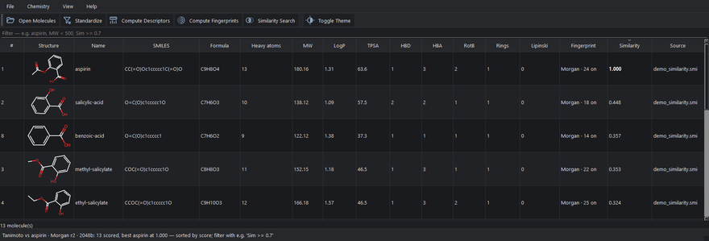
What it does: ranks your whole dataset by how similar each molecule is to one query molecule — the classic "my compound works, what else do I have that looks like it?" question.
How:
Chemistry → Similarity Search… (Ctrl+Shift+M)
and paste any SMILES as the query (it doesn't have to be in your
dataset).Reading the numbers: 1.00 = identical fingerprint; above ~0.85 = very
similar; below ~0.3 = mostly unrelated. Hover the Similarity column for full
context ("Tanimoto vs aspirin · Morgan r2 · 2048b") — a score is only
meaningful against that context. Keep just the good hits with a filter like
Sim >= 0.7.
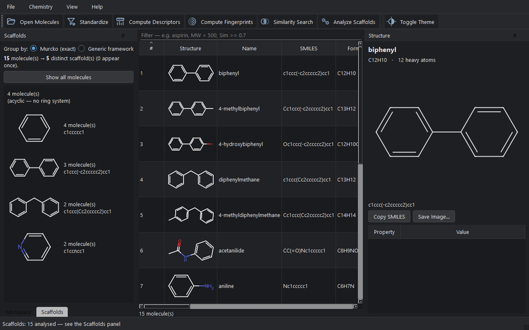
What it does: strips each molecule down to its ring framework (its Bemis–Murcko scaffold) and groups the dataset by it — answering "how many distinct chemical series do I actually have?"
How:
Chemistry → Analyze Scaffolds (Ctrl+Shift+A).Good to know: molecules with no rings are grouped as "(acyclic)" — they have no scaffold, and that itself is worth knowing.
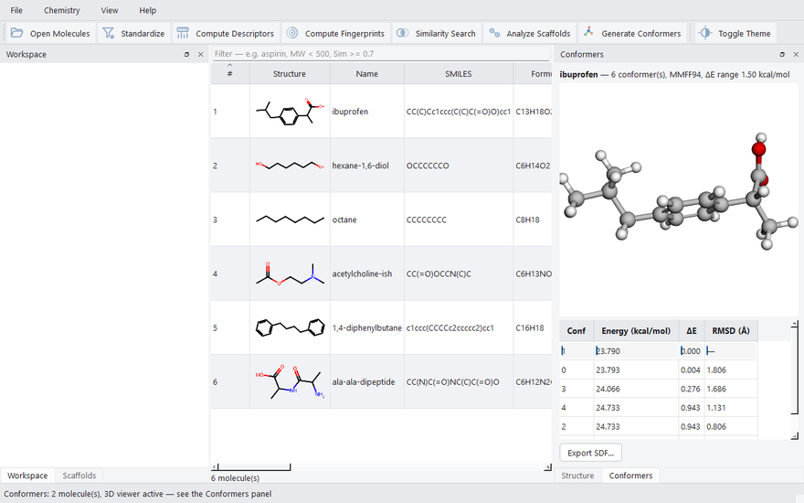
What it does: molecules are flexible — the flat drawing is only a summary. This generates several plausible 3D shapes (conformers) per molecule, ranks them by energy, and shows them in a rotatable 3D viewer.
How:
Chemistry → Generate Conformers…
(Ctrl+Shift+C). The defaults (10 conformers, MMFF94) are
sensible; just click OK.Good to know: the lowest-energy conformer is listed first. If MMFF94 can't handle a molecule, WaweKit automatically falls back to UFF and says so.
Beside conformer ensembles, you can view any selected molecule in interactive 3D dynamically using the 3D Viewer panel (tabbed with Structure and Conformers on the right). When a molecule is selected in the table, the 3D Viewer generates an on-the-fly 3D conformation (using RDKit's ETKDGv3 and MMFF optimization) so you can immediately view and rotate its structure. Use the dropdown inside the dock to switch representation styles (Ball & Stick, Stick, Space-fill, Wireframe).
You can customize WaweKit's visual style. Choose from 8 named themes matching your visual preferences:
Night (default dark), Graphite, Gray, Moderate, Light, Creme Coffee, Sahara, and Nebula.
Select these via Help → Look & Feel, or press Ctrl+T to cycle to the next theme. Links and text automatically adjust to remain fully legible across all themes.
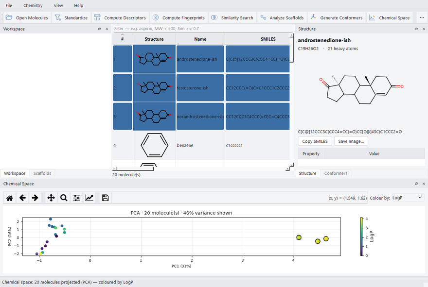
What it does: places every molecule as a point on a 2D map where similar molecules land near each other — the fastest way to see your dataset's structure: its families, its outliers, its coverage.
How:
Chemistry → Chemical Space… (Ctrl+Shift+P).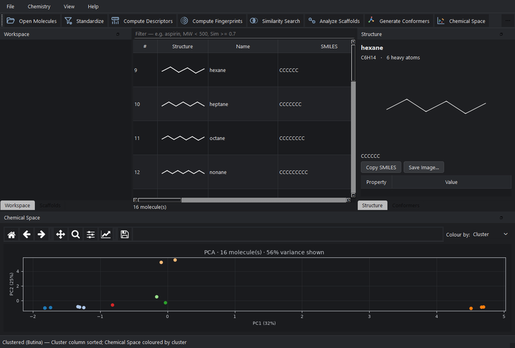
What it does: automatically groups similar molecules and writes each group's number into a Cluster column. Where scaffold analysis groups by exact core, clustering groups by overall similarity.
How:
Chemistry → Cluster Molecules… (Ctrl+Shift+K).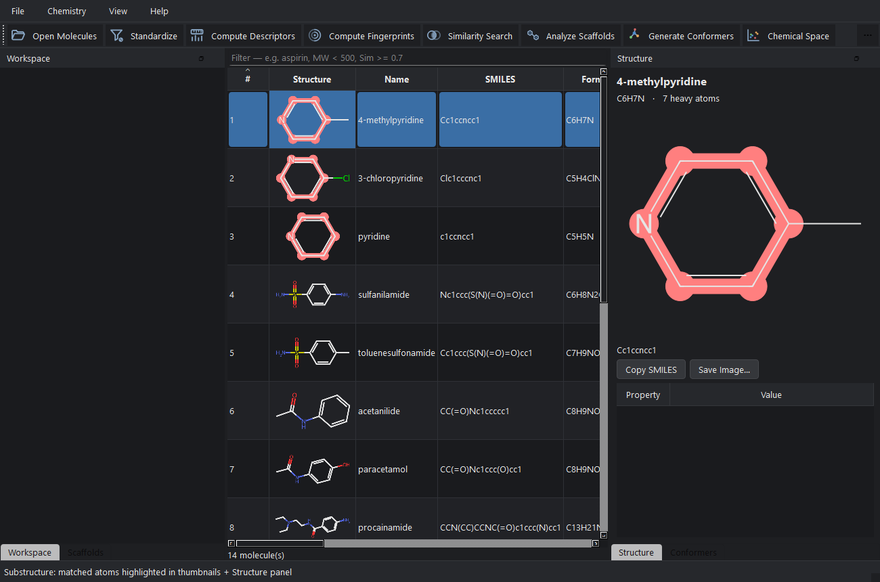
What it does: finds every molecule containing a fragment you specify, and highlights the matching atoms in every thumbnail and in the Structure panel.
How:
Chemistry → Substructure Search…
(Ctrl+Shift+U).c1ccncc1 for a pyridine ring) or SMARTS (a pattern
language, e.g. [OH] for any hydroxyl). The dialog validates
as you type and won't search an invalid query.Good to know: the ✓ column shows "✓ 2" when the fragment occurs twice in one molecule. The highlight stays until your next search or until the dataset changes.
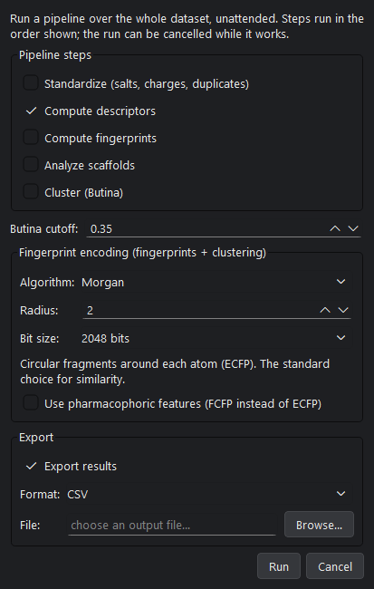
What it does: runs several steps back-to-back over the whole dataset — standardize → descriptors → fingerprints → scaffolds → clustering → export — so a routine workflow is one dialog, not six menus.
How:
Chemistry → Batch Processing… (Ctrl+B).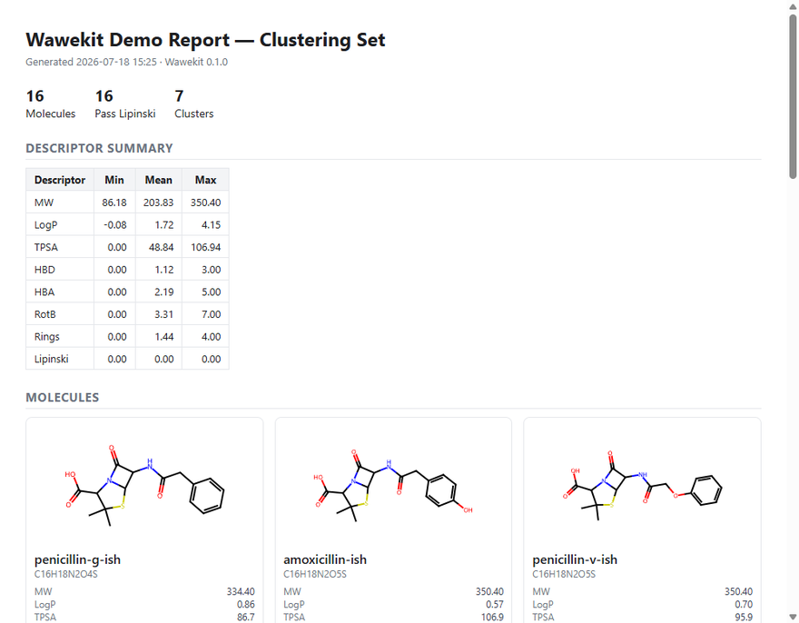
What it does: produces a polished, self-contained HTML and/or PDF summary of your dataset: headline stats, a descriptor min/mean/max table, Lipinski pass count, and a grid of structures. The HTML file is a single file — email it, drop it in a shared folder, or print it; no software needed to view it.
How:
File → Generate Report… (Ctrl+R).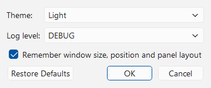
File → Settings… (Ctrl+,):
Ctrl+T, and selectable directly from
Help → Look & Feel. Your choice is remembered across
restarts.Settings persist in a small human-readable file in your user config folder; Restore Defaults puts everything back.
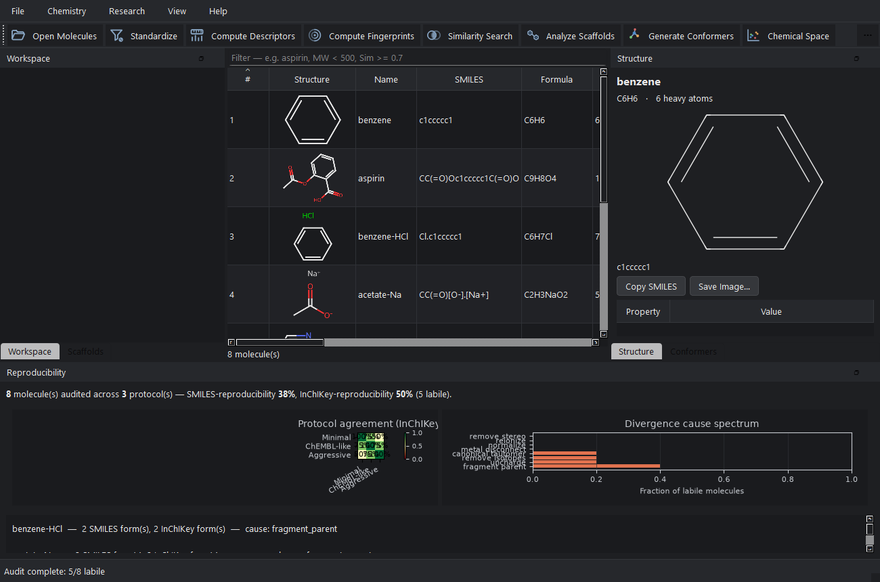
What it does: a research-grade diagnostic unique to WaweKit. Different software cleans ("standardizes") the same molecule differently — so the same compound can end up with different identities in different databases, silently. The audit runs three standardization recipes over your dataset and reports:
How: Research → Reproducibility Audit…
(Ctrl+Shift+R), keep all three protocols ticked, OK. "Attribute
causes" is slower but produces the cause chart. Protocols that fail on a
molecule are reported as failures, separately — a failure is not counted
as divergence.
WaweKit can be extended by third-party plugins. Installing one is just
pip install <plugin> in the same Python environment — on next
start it appears in the Plugins menu automatically. A misbehaving plugin
is skipped with a log message; it can never prevent WaweKit from starting.
Developers: see examples/example-plugin/ in the repository for a
complete working template.
| Shortcut | Action |
|---|---|
Ctrl+O | Open molecule files |
Ctrl+D | Compute descriptors |
Ctrl+Shift+S | Standardize |
Ctrl+Shift+F | Compute fingerprints |
Ctrl+Shift+M | Similarity search |
Ctrl+Shift+A | Analyze scaffolds |
Ctrl+Shift+C | Generate conformers (3D) |
Ctrl+Shift+P | Chemical space map |
Ctrl+Shift+K | Cluster molecules |
Ctrl+Shift+U | Substructure search |
Ctrl+B | Batch processing |
Ctrl+Shift+V | Convert molecule formats |
Ctrl+R | Generate report |
Ctrl+Shift+R | Reproducibility audit (Research) |
Ctrl+, | Settings |
Ctrl+T | Cycle to the next Look & Feel theme |
F1 | This manual |
Ctrl+D). Rows without the
value are hidden, not treated as zero.Help → About) — a screenshot plus the log
file makes bugs fast to fix.
WaweKit — cheminformatics on your desktop.
github.com/waweai/WaweKit